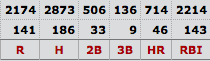
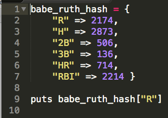
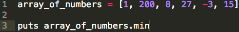

Ask the Ruby Novice: Arrays vs. Hashes
Or, what I learned in week 3 at Dev Bootcamp
So this week we covered arrays and hashes. You may be saying, what the ? Well, let me fill you in: arrays and hashes are Ruby objects that hold collections. You may still be saying, what the ? Well let me fill you in some more: computers use collections to keep track of things. What kind of things? Everything. Take a look at some baseball stats:
What is this? This is Babe Ruth's career stat line. Babe Ruth was the greatest baseball player to ever live. How do I know this? Because he has a candy bar named after him.
Anyway, The top line are his career totals, the second line are his 162 game averages, and the third line gives the abbreviation for each stat. (R = runs scored; H = hits, doubles, triples, home runs, RBIs, you get the idea.)
Now let's say we want to program a computer to hold each of Babe's career stats in such a way that we could access them when desired. A great way to do that would be to utilize a hash, which can store pairs of information, like this:
See the code? The stat abbreviations serve as the keys, and the stat totals serve as the values. The last line of code will display on the screen Babe's total runs scored ("R", which is 2,174). We could access any of Babe's stats like this. Also, this hash could store a lot more information. We could track all of Babe's stats. We could track anything!
Arrays are another type of collection object in Ruby, which are simpler than hashes. Arrays track a group of objects and automatically assign ID numbers (called indexes) to each object.
Let's say you have a bunch of numbers and want to determine which number is the smallest. An array would do the job:
The above code contains an array of several numbers, then displays on the screen the smallest number in the array (that's what the .min does). So -3 will display on the screen.
The array is not as dynamic as the hash, and it also takes longer for the array code to run than the hash code (because the .min method has to cycle through the entire array to determine which number is the smallest, while in the hash code all the computer has to do is locate a specific hash). But arrays are used often to collect and manipulate data. In fact, you could store arrays inside hashes, and hashes inside arrays! Hello! Maybe we will get into that next time.
Ruby novice Phil signing off. Good night and God bless America.